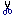
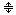

Основные функции Acidpad
Панель инструментов Acidpad содержит перечень всех самых необходимых функций текстового редактора. Его компоненты:
- Функция "Новый Файл (New)" создаёт новый тестовый фаил.
- Функция "Открыть Файл (Open)" открывает тестовый файл. При этом появляется диалоговое окно, внешний вид и поведение которого зависят от выбранных Вами настроек.
- Функция "Сохранить Файл (Save)" сохраняет тестовый файл. Если он не был сохранён ранее, появляется диалоговое окно сохранения файлов, если же был сохранён, то он просто перезаписывается без подтверждения.
- Функция "Отменить Действие (Undo)" отменяет последнее действие, пройзошедшее в текстовом поле (в любом). Количество действий, запоминаемых программой, можно изменить в диалоговом окне "Настройки (Settings)" на вкладке "Редактор (Editor)".
- Функция "Повторить Действие (Redo)" повторяет последнее действие.
 - Функция "Вырезать (Cut)" вырезает текст, выделенный в одном из текстовых полей.
- Функция "Копировать (Copy)" копирует (запоминает) текст, выделенный в одном из текстовых полей.
- Функция "Вставить (Paste)" всавляет запомненный ранее текст вместо текста, выделенного в одном из текстовых полей.
 - Функция "Разделить Документ (Split Document)" разбивает текстовое поле на два зависимых друг от друга поля. Все события, произошедшие в одном из них мгновенно происходят и в другом.
Меню "Правка (Edit)" помимо выше перечисленных функций содежит функцию вставки времени и даты "Время/Дата (Time/Date)", функцию выделения всего текста в любом из текстовых полей ("Выделить Всё (Select All)"), функцию перехода на заданную строку "Переход к Строке (Go to Line)", а также функции поиска и замены в тексте символа или группы символов, расположенных после каретки("Поиск/Замена (Find/Replace)").